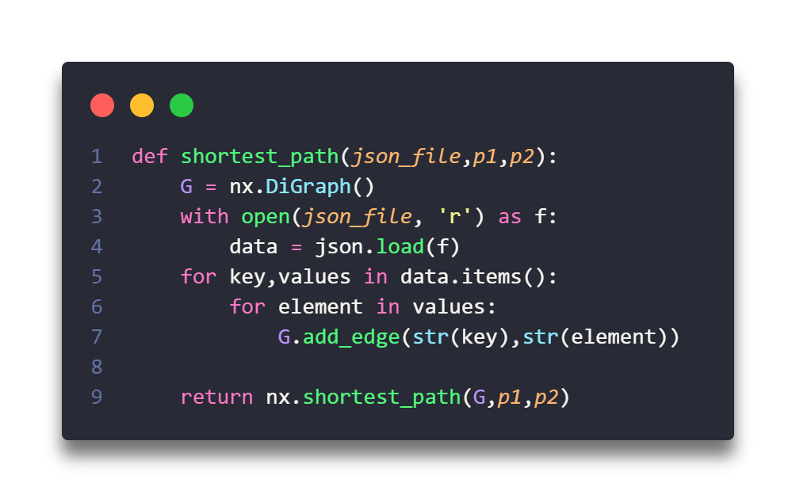

Wikimap
Ouvrir le menu
Accueil
Cartographie
Fonction
Infos
Comment a-t-on réalisé ce projet ?
1ère partie : récupération des données
4ème partie : Fonctions de recherche de chemins et cartographie
Tout d'abord j'ai réalisé la fonction de recherche du chemin le plus court
